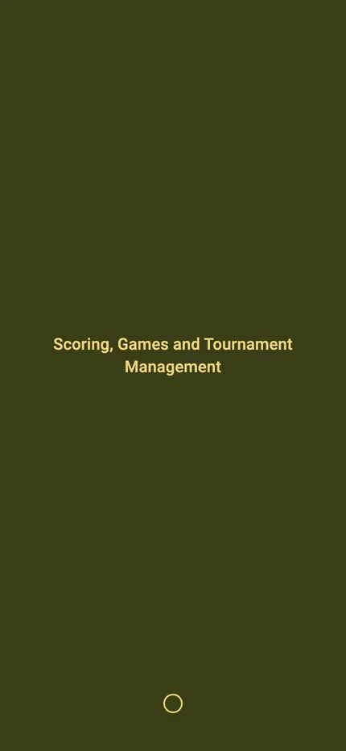
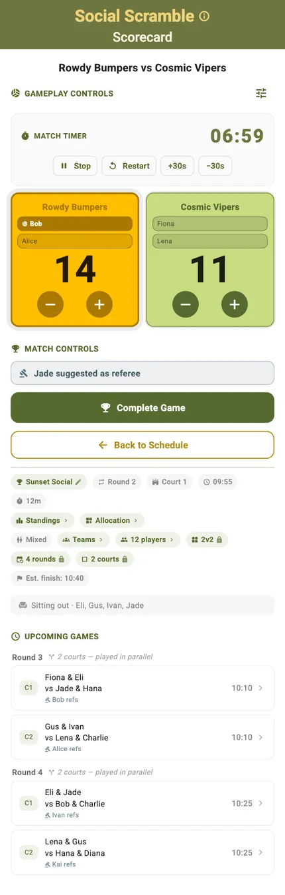
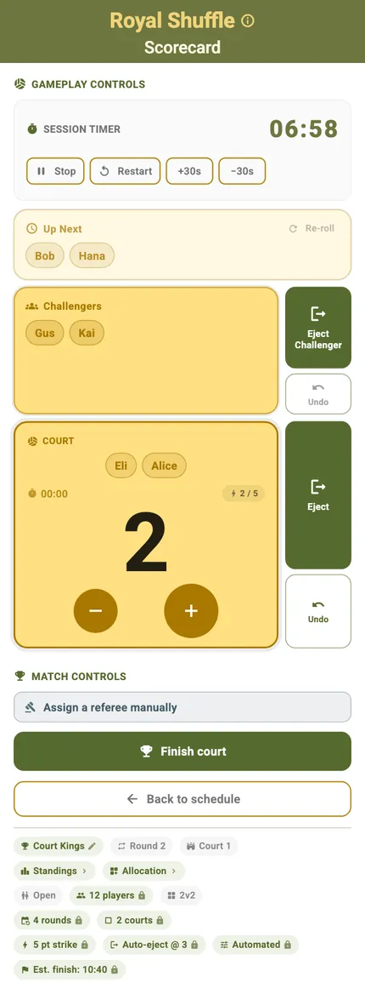
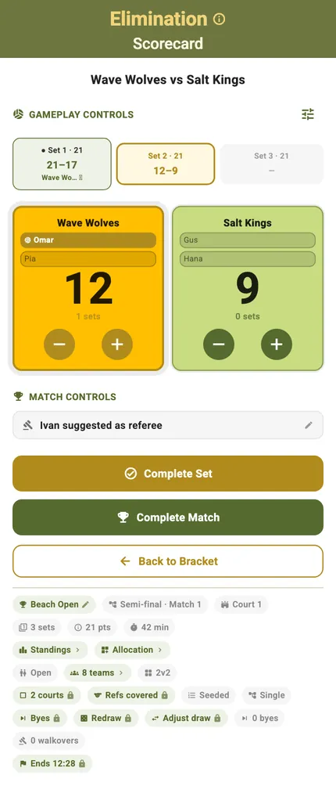
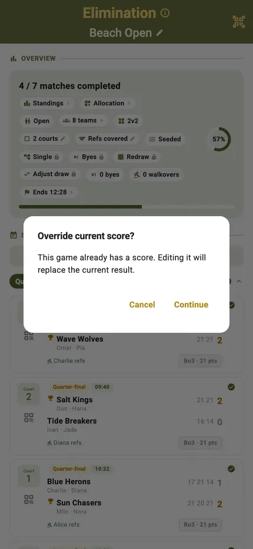
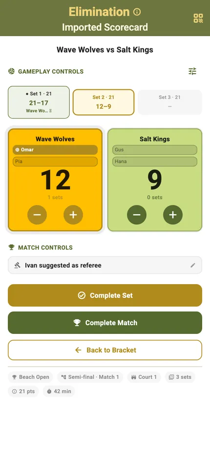

Match Controls

Whatever you are running — a quick game, a scramble, a knockout final — the scorecard is the same. Big targets, the serving side marked, the timer in the header, and undo for when the call goes the other way.
That consistency is the point. Someone handed a phone to referee a court does not need to be told which format they are scoring; the controls are where they were last time.
Best for
- Scoring with one hand while standing at a net post
- Handing the phone to whoever is refereeing without explaining it
- Sessions where the score has to be right and nobody wants to argue
The scorecard
Tap a side to award the point. Service passes automatically when the other side scores, and the set score sits above the running total.
Portrait
The two sides, the score, the timer and the match controls on one screen. Undo takes back the last point without unwinding anything else.
Landscape
Turn the phone and the same controls rearrange for a net post or a table at the side of the court. Nothing is hidden — the layout changes, the functions do not.

Splash before the whistle
A match opens on its own card showing who is playing and on which court, so the phone can be handed over before anyone starts tapping.

The prompts that keep it honest
Two things a paper scoresheet always gets wrong: which end each team is on, and when the game actually ended.

Change ends
When the combined score reaches the side-change point TournaQ says so and swaps the counters for you, so the scoreboard still matches which side of the net each team is standing on. Turn the automation off and you can swap by hand instead.

Game won
Reach the target and TournaQ calls it, showing the final score and banking the result. Nobody has to decide whether that last point finished it.
The same card, every format
The scorecard adapts to the format around it without changing what the buttons do.
In a scramble
The card carries the round, the court and who is refereeing, plus the sitting-out list — because in a rotation format the question is always who is next.

On a king court
The court, the challengers and the queue behind them, with the strike count updating as you score.

In a bracket
The same controls under a knockout tie, with the round label and what winning it means.

When nobody scored it live
A court finishes while you are refereeing another one. That should not leave a hole in the results.

Enter the result directly
Type the final score into the match card and the standings, brackets and tables update exactly as if the scorecard had been used. It is the same result, arrived at differently.

Or take it from another phone
A scorecard scored on someone else's device arrives marked as imported, so a session run across several phones ends up in one place.
Every match control
-
Available
Live point-by-point scoring
Tap to award points to either team in real time. The interface is optimised for one-handed use during active play.
-
Available
Set management
Automatic set tracking with configurable winning conditions. TournaQ handles the transition between sets without manual input.
-
Available
Serving player tracking
The active server is highlighted within the team card. Service changes when the non-serving team scores. The serving player indicator updates automatically on every point.
-
Available
Score correction
Undo the last point at any time. Mistakes during fast play can be corrected immediately without losing match state.
-
Available
Time Control
React to timeouts and other time-affecting events — restart, pause, add or remove time on the timer.
-
Available
Match result & history
Completed matches are saved locally on the device with full score history per set.
-
Available
Landscape scorecard
Rotate the device at any point to switch to landscape mode. All controls remain accessible in the rearranged layout — designed for net-post placement or table-side scoring.
-
Available
Hard Session Timing
Enforce a strict time limit on a session — the clock decides when it ends, not the players.
-
Available
Target Points Setting
Set individual Target Points, system will remind you that you have reached the target score
-
Available
Side Change Automation
When the combined score reaches the side-change point, TournaQ shows the Side Change dialog and swaps the counters automatically. Switch the automation off to swap sides manually with gesture control.
-
Available
Automatic Referee/Admin Suggestion
Get automatic and fair referee suggestions from the tournament player pool for all games in your tournament.
-
Available
Manual Gameplays
Some formats require dynamic administration because players are constantly rotating. With Manual Gameplay the admin selects the new team or players manually after each selection
-
Available
Automated Gameplays
Some formats require dynamic administration because players are constantly rotating. With Automated Gameplay player or teams are queued fairly and the admin only needs to take care of scoring and ejecting.
-
Available
Auto-Allplay Gameplay
Some formats require dynamic administration because players are constantly rotating. With Auto-Allplay Gameplay TournaQ automatically assignes and rotates game admins, so no one has to sit out.
Something about scoring that does not work the way your matches do? Tell us how you score them.